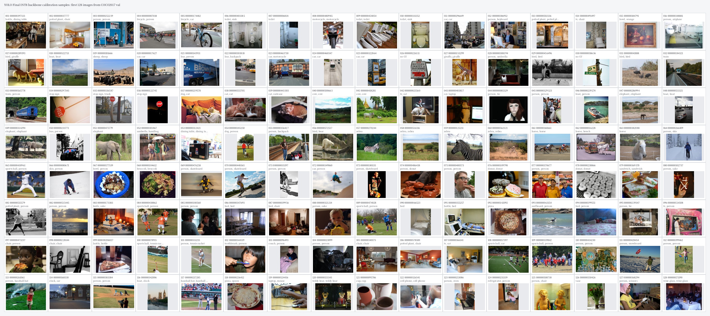

用途：这份 PDF 不是正式论文，而是帮助现场按代码讲清楚项目。它把模型结构、训练配置、实验路线、错误复盘、量化部署和最终成果整理成一份速览材料。
最佳 checkpoint:
yolo_final/outputs/dual_scale_three_box_coco_only_noobj1_416_basic_aug_scale_jitter_50_lr7e4_ddp_20260512_130823/best.pth| 指标 | 数值 |
|---|---|
| COCO AP | 0.192170 |
| AP50 | 0.310452 |
| AP75 | 0.200965 |
| AP small | 0.084709 |
| AP medium | 0.211648 |
| AP large | 0.261832 |
| AR100 | 0.351947 |
| 目录或文件 | 讲解重点 |
|---|---|
| configs/ | 所有正式实验由 TOML 配置驱动，最终配置是 416 + scale jitter + 50 epoch + lr=7e-4。 |
| models/common.py | ConvBNAct、ResidualBlock、BasicResidualBlock 等基础模块。 |
| models/backbone.py | MultiScaleBaselineBackbone 输出 p4/p5，支持残差和多尺度特征。 |
| models/neck.py | DualScaleFPNPANLite 进行 FPN/PAN-lite 特征融合。 |
| models/head.py | DecoupledDetectionHead 将分类与回归/objectness 解耦。 |
| models/detector.py | YOLOv0Baseline 统一组装 backbone、neck、head。 |
| data/detection_dataset.py | COCO manifest、.pt packed loader、resize、bbox sanitize、collate。 |
| losses/yolo_loss.py | GIoU、objectness、classification loss、dynamic cost assignment。 |
| engine/distributed_trainer.py | DDP epoch 训练、验证和全局指标聚合。 |
| tools/train_ddp.py | 8GPU DDP 正式训练入口。 |
| utils/prediction.py | prediction tensor 解码、score 计算、NMS。 |
| utils/coco_eval.py | pycocotools 官方 COCO AP 评估和原图坐标映射。 |
| tools/quantize_model.py | INT8 量化和 calibration。 |
| backend/ + frontend/ | 最终可使用的图片检测工具。 |
总入口是 models/detector.py 中的 YOLOv0Baseline。它不直接写死某个网络，而是根据配置组装 backbone、neck 和 head。
features = self.backbone(x)
if self.neck is not None:
features = self.neck(features)
return {level: self.head[level](features[level]) for level in self.feature_levels}backbone 的作用是把图像逐级转成语义更强的特征。浅层保留边缘、纹理和局部形状；深层分辨率更低，但目标语义更强。最终使用 MultiScaleBaselineBackbone，输出 p4/p5。
残差块学习 y = x + F(x)，比直接学习 y = F(x) 更容易优化，能缓解深层网络的梯度传播问题。
ConvBNAct: Conv2d -> BatchNorm2d -> ReLU
ResidualBlock: y = x + ConvBNAct(ConvBNAct(x))
p4: 分辨率更高，适合中小目标
p5: 语义更强，适合中大目标neck 使用 DualScaleFPNPANLite。FPN top-down 把 p5 的强语义传给 p4，PAN bottom-up 把 p4 的定位信息再传回 p5。这样每个检测尺度都同时具有语义和定位信息。
p5_td = self.p5_lateral(p5)
p5_up = F.interpolate(p5_td, size=p4.shape[-2:], mode="nearest")
p4_td = self.p4_fuse(self.p4_reduce(p4) + p5_up)
p4_down = self.p4_downsample(p4_out)
p5_out = self.p5_fuse(self.p5_reduce(p5) + p4_down)head 使用 DecoupledDetectionHead。分类和定位关注的信息不同：分类更依赖语义，bbox 回归更依赖边界和尺度，objectness 更像候选质量判断。解耦 head 可以减少梯度冲突。
x = self.stem(x)
cls_feat = self.cls_branch(x)
reg_feat = self.reg_branch(x)
cls_logits = self.cls_pred(cls_feat)
reg_logits = self.reg_pred(reg_feat)最终每个尺度输出 [B, H, W, A(5+C)]。最终 A=3，C=80，所以每个 grid 输出 3*(5+80)=255 维。
最终评估和展示常用 alpha=2.0, beta=1.0，表示更强调 objectness 的质量校准。
最终 loss 由 box、正样本 objectness、负样本 objectness、classification 四部分组成。
L = lambda_box * L_box
+ lambda_obj * L_obj_pos
+ lambda_noobj * L_obj_neg
+ lambda_cls * L_cls| 参数 | 含义 |
|---|---|
| lambda_box=5.0 | 提高定位损失权重，COCO AP 对定位质量敏感。 |
| lambda_obj=1.0 | 正样本 objectness 权重。 |
| lambda_noobj=1.0 | 背景 objectness 权重，用于抑制误检。 |
| lambda_cls=1.0 | 分类损失权重。 |
| dynamic_topk=2 | 每个 GT 最多选择 2 个低 cost 正样本。 |
| soft_objectness_target=iou | 用 IoU 作为 objectness soft target。 |
| cls_loss_mode=quality_bce | BCE 形式，类别 target 可由 IoU soft target 调整。 |
dynamic_cost assignment 的核心是根据当前预测质量分配正样本，而不是固定把 GT 交给某一个 anchor。
正式训练统一使用 COCO-only，避免 VOC 与 COCO label id 语义冲突。
train_manifest = /home/lidz/YOLO/DataSet/Unified/manifests/coco2017_train.jsonl
val_manifest = /home/lidz/YOLO/DataSet/Unified/manifests/coco2017_val.jsonl
num_classes = 80数据读取使用 .pt packed chunks，降低大量小文件随机 IO，对 8GPU DDP 更稳定。
packing_format = "pt"
packed_root = "/home/lidz/YOLO/DataSet/Unified/packed"
packed_chunk_size = 1024
packed_cache_size = 4最终增广是 train-only bbox-safe：horizontal flip、color jitter、light scale jitter、light affine。增广后必须同步更新 bbox，并通过 bbox sanitize 删除无效框。
torchrun --standalone --nproc_per_node=8 tools/train_ddp.py --config configs/dual_scale_three_box_coco_only_noobj1_416_basic_aug_scale_jitter_50_lr7e4.toml正式指标使用 pycocotools COCO AP。最关键的修复是把预测框从 resize 坐标映射回原图坐标，否则 COCO AP 会接近 0。
original_height, original_width = target["original_size"].tolist()
scale_x = original_width / image_size
scale_y = original_height / image_size
x1 = x1 * scale_x
x2 = x2 * scale_x
y1 = y1 * scale_y
y2 = y2 * scale_y正式实验结束后固定流程：full COCO eval、500 图离线 sweep、12 张 pred-only 展示图、loss 曲线和 metadata 归档。
| 实验 | AP | AP50 | AP75 | AR100 | 结论 |
|---|---|---|---|---|---|
| 320 COCO-only topk2 | 0.126985 | 0.218369 | 0.129184 | 0.260567 | COCO-only 起点 |
| 320 topk1 | 0.108180 | 0.195980 | 0.105638 | 0.239071 | topk 降低伤害召回 |
| 416 original | 0.148786 | 0.248717 | 0.155263 | 0.302299 | 分辨率提升明确有效 |
| 416 K6 | 0.146778 | 0.244778 | 0.153023 | 0.303445 | 召回略好，AP 未超过原 anchors |
| 416 P3/P4/P5 K9 | 0.136481 | 0.228555 | 0.143862 | 0.313965 | AR 提升但 AP 下降 |
| 416 scale jitter 40 | 0.181671 | 0.295159 | 0.189616 | 0.343730 | 数据增广主线有效 |
| 416 scale jitter 50 lr1e-3 | 0.188057 | 0.307415 | 0.195546 | 0.348692 | 50 epoch 继续提升 |
| 416 scale jitter 50 lr7e-4 | 0.192170 | 0.310452 | 0.200965 | 0.351947 | 最终最佳 FP32 |
| 416 scale jitter 50 lr5e-4 | 0.190307 | 0.305895 | 0.200180 | 0.350863 | 接近但不如 7e-4 |
| 错误 | 原因 | 修复 |
|---|---|---|
| COCO AP 接近 0 | 预测框是 resize 坐标，GT 是原图坐标 | 在 utils/coco_eval.py 中映射回原图坐标 |
| VOC/COCO 混合训练 | VOC 和 COCO label id 语义不同 | 正式实验改为 COCO-only |
| .pt loader 未真正落地 | 配置写了 packed，但读取仍可能走 raw image | 补齐 PackedPtStore 和启动校验 |
| positive_cells 统计错 | 多 anchor 下平均掉 anchor 维 | 展平 [H,W,A] 后按图求和 |
| quality_bce 语义不清 | 旧代码没有显式分支 | 明确支持 bce/quality_bce/varifocal |
| 训练过慢 | 早期使用 DataParallel | 改为 torchrun + 8GPU DDP |
| DDP step 日志误导 | 把所有 rank batch 总数当 optimizer steps | 区分 optimizer_steps 和 global_batch_count |
| 只看 val loss 误判 P3 | scale-aware 降低 loss，但 COCO AP 下降 | 正式结论以 COCO AP/AR 和 sweep 为准 |
| 展示框数量不可比 | 4 张图和 12 张图使用不同阈值/top-k | 固定展示参数 |
最终量化策略是 Backbone INT8 + Detection Head FP32。backbone 占主要卷积计算量，适合量化；head 输出 bbox、objectness 和 class logits，对数值更敏感，所以保留 FP32。
manifest = /home/lidz/YOLO/DataSet/Unified/manifests/coco2017_val.jsonl
calibration_samples = 128
input_size = 416 x 416| 模型 | AP | AP50 | AP75 | AR100 |
|---|---|---|---|---|
| FP32 | 0.192170 | 0.310452 | 0.200965 | 0.351947 |
| INT8 backbone | 0.191483 | 0.309759 | 0.199871 | 0.351494 |
AP 只下降约 0.000687，说明 backbone-only INT8 是稳定的部署方案。

最终检测工具由 scripts/start_yolo_detection_tool.sh 启动，后端加载 TorchScript 模型，前端上传图片并展示检测框、类别、置信度和推理耗时。
这个项目最终完成了从 YOLO 检测模型设计、COCO-only 数据训练、8GPU DDP、正式 COCO AP 评估、实验消融、错误诊断、TorchScript 导出、INT8 量化到前后端检测工具的完整闭环。最重要的成果不是单一 AP 数字，而是建立了一条可信、可复现、可解释、可部署的目标检测工程链路。